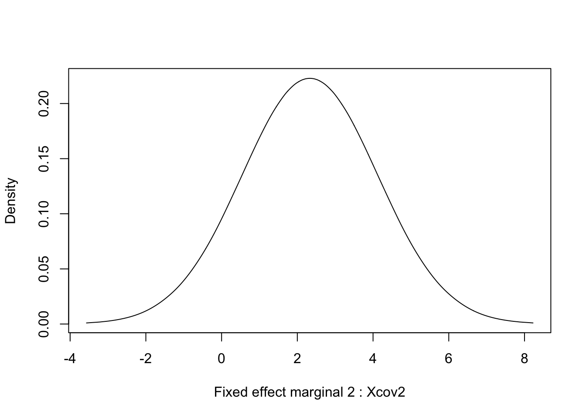

This topic is a simple example of a spatial model for a real dataset. It is meant as a first introduction to spatial models in INLA. An overview of spatial modeling in INLA can be found in Bakka et al. (2018).
I recommend looking at at least one of the Basic INLA topics, e.g. BTopic102, if you are not already familiar with INLA.
In this topic we do not compare different models or meshes.
We load the libraries and functions we need. You may need to install these libraries (Installation and general troubleshooting).
library(INLA); library(sp); library(fields)
library(geoR)
library(viridisLite)
# - for better colours
rm(list=ls())
options(width=70, digits=2)data('ca20')
class(ca20)## [1] "geodata"summary(ca20)## Number of data points: 178
##
## Coordinates summary
## east north
## min 4957 4829
## max 5961 5720
##
## Distance summary
## min max
## 43 1138
##
## Borders summary
## east north
## min 4920 4800
## max 5990 5800
##
## Data summary
## Min. 1st Qu. Median Mean 3rd Qu. Max.
## 21 43 50 51 58 78
##
## Covariates summary
## altitude area
## Min. :3.3 1: 13
## 1st Qu.:5.2 2: 49
## Median :5.7 3:116
## Mean :5.5
## 3rd Qu.:6.0
## Max. :6.6
##
## Other elements in the geodata object
## [1] "reg1" "reg2" "reg3"For a description of the data see ?ca20 and references
therein.
First we scale and re-name the data, so that we are consistent with the conventions used in the other topics.
df = data.frame(y = ca20$data, locx = ca20[[1]][ , 1], locy = ca20[[1]][ , 2], ca20[[3]])
spatial.scaling = 100
df$locx = (df$locx - min(df$locx))/spatial.scaling
df$locy = (df$locy - min(df$locy))/spatial.scaling
df$altitude = df$altitude - mean(df$altitude)
df$y = df$y-50If you are curious about this re-scaling, see the comments at the end.
First we do simple summary and compute the correlations.
summary(df)## y locx locy altitude area
## Min. :-29.0 Min. : 0.0 Min. :0.0 Min. :-2.22 1: 13
## 1st Qu.: -7.0 1st Qu.: 3.3 1st Qu.:2.4 1st Qu.:-0.32 2: 49
## Median : 0.5 Median : 5.4 Median :3.7 Median : 0.13 3:116
## Mean : 0.7 Mean : 5.3 Mean :4.0 Mean : 0.00
## 3rd Qu.: 8.0 3rd Qu.: 7.4 3rd Qu.:5.3 3rd Qu.: 0.48
## Max. : 28.0 Max. :10.0 Max. :8.9 Max. : 1.08head(df)## y locx locy altitude area
## 1 2 7.5 0.00 0.58 3
## 2 7 7.7 0.46 0.53 3
## 3 22 7.9 0.93 0.78 3
## 4 24 8.1 1.40 1.08 3
## 5 18 8.2 1.86 1.08 3
## 6 -5 8.4 2.33 0.23 3cor(cbind(df[, 1:4], as.numeric(df[ , 5])))## y locx locy altitude as.numeric(df[, 5])
## y 1.000 -0.049 -0.52 0.30 0.49
## locx -0.049 1.000 0.25 -0.42 -0.28
## locy -0.520 0.249 1.00 -0.75 -0.83
## altitude 0.297 -0.418 -0.75 1.00 0.63
## as.numeric(df[, 5]) 0.485 -0.280 -0.83 0.63 1.00Next we plot the relationship between altitude and the
response.
plot(df$altitude, df$y)
abline(lm(df$y~df$altitude), col="red")quilt.plot(x=df$locx,y=df$locy,z=df$y,nx=40,ny=40, col = plasma(101),
main = "Data")The mesh is the discretization of the domain (study area). The domain is divided up into small triangles. This is similar to creating a raster or a grid over space.
max.edge = 0.5
mesh <- inla.mesh.2d(
loc=df[ , c('locx', 'locy')],
offset = c(0.5, 1.5),
max.edge=c(max.edge, max.edge*3),
# discretization accuracy
cutoff=max.edge/5)
# cutoff removes locations that are too close, good to have >0Mesh construction is a detailed topic that I recommend you read after
having finished the current topic. You can use the function
meshbuilder() to learn about mesh construction. You can also read about mesh construction
here.
Next we plot the mesh (and the data).
plot(mesh, asp=1)
points(df[ , c('locx', 'locy')], col='red')
axis(1); axis(2)We see that the mesh looks reasonable, there is a fine mesh where there is data, we have an outer boundary, and there are no “weird” patterns.
To connect the measurement locations to the mesh representation, we need the so-called A-matrix.
A = inla.spde.make.A(mesh=mesh, loc=data.matrix(df[ , c('locx', 'locy')]))
dim(A)## [1] 178 1075A[1:2, 100:200]## 2 x 101 sparse Matrix of class "dgCMatrix"
##
## [1,] . . . . . . . . . . . . . . . 1 . . . . . . . . . . . . . . . .
## [2,] . . . . . . . . . . . . . . . . 1 . . . . . . . . . . . . . . .
##
## [1,] . . . . . . . . . . . . . . . . . . . . . . . . . . . . . . . .
## [2,] . . . . . . . . . . . . . . . . . . . . . . . . . . . . . . . .
##
## [1,] . . . . . . . . . . . . . . . . . . . . . . . . . . . . . . . .
## [2,] . . . . . . . . . . . . . . . . . . . . . . . . . . . . . . . .
##
## [1,] . . . . .
## [2,] . . . . .# - to see what A representsThe stack is a complicated way of supplying the data (and covariates and effects) to INLA. For more complex spatial models, the stack is incredibly helpful, as the alternative is worse (you would have to construct the total model \(A\) matrix by hand).
Xcov = data.frame(intercept=1, altitude=df$altitude)
# - could add: area1 = (df$area==1)*1, area2 = (df$area==2)*1
# - - expands the factor covariates
# - ensure that all entries are numeric!
Xcov = as.matrix(Xcov)
colnames(Xcov)## [1] "intercept" "altitude"stack <- inla.stack(tag='est',
# - Name (nametag) of the stack
# - Here: est for estimating
data=list(y=df$y),
effects=list(
# - The Model Components
s=1:mesh$n,
# - The "s" is means "spatial"
Xcov=Xcov),
# - The second is all fixed effects
A = list(A, 1)
# - First projector matrix is for 's'
# - second is for 'fixed effects'
)We could have asked INLA to expand the covariates internally, but
this way is easier to keep track of. The naming “s” is somewhat
arbitrary, but it must correspond to the letter we use in the
formula (later).
First we define the spatial Model Component (random effect). The prior for the parameters / random effect is a (Gaussian) Matérn prior with range \(r\) and prior marginal standard deviation \(\sigma\). The \(r\) and \(\sigma\) are hyper-parameters. We start with defining the prior median for these hyper-parameters.
prior.median.sd = 1; prior.median.range = 7
# - diff(range(mesh$loc[, 1]))/2
# - sd(df$y)/10
# - thisk about these, and experiment!
spde = inla.spde2.pcmatern(mesh, prior.range = c(prior.median.range, .5), prior.sigma = c(prior.median.sd, .5), constr = T)The spde object is the spatial model on the underlying
mesh, including hyper-priors. (It is possible to sample from this
prior.) However, to connect it to the model on the data locations, we
need the A-matrix (which is in the stack object).
Next we define the predictor.
formula = y ~ -1 + Xcov + f(s, model=spde)
# - Remove standard intercept
# - Fixed effects + random effectsHere we are saying that the predictor for \(y\), namely \(\eta\), is a sum of model components. With
a Gaussian likelihood: \(y = \eta +
\epsilon\), where \(\epsilon\)
is an iid Gaussian noise vector. Optional: Add the two
area1 and area2 covariates to this
formula.
Next we define the observation likelihood (also known as Stage 1). You will often see this in the INLA call, but, for increased clarity/readability, I prefer to do it separately.
prior.median.gaus.sd = 5.5
# - Think about this value
# - Remember sd(df$y)
family = 'gaussian'
control.family = list(hyper = list(prec = list(
prior = "pc.prec", fixed = FALSE, param = c(prior.median.gaus.sd,0.5))))In total, this says that the observation likelihood is Gaussian, with
a parameter \(\sigma\), and that the
prior is exponential \[\pi(\sigma) = \lambda
e^{-\lambda x}, \] where \(\lambda\) is determined by setting the
median \(\log(2)/\lambda\) at
prior.median.gaus.sd.
res <- inla(formula, data=inla.stack.data(stack),
control.predictor=list(A = inla.stack.A(stack), compute=T),
# compute=T to get posterior for fitted values
family = family,
control.family = control.family,
#control.compute = list(config=T, dic=T, cpo=T, waic=T),
# - Model comparisons
control.inla = list(int.strategy='eb'),
# - faster computation
#control.inla = list(int.strategy='grid'),
# - More accurate integration over hyper-parameters
verbose=F)To see detailed output while the inla call is running, please set
verbose=TRUE. The control.xxx comments
illustrate a few optional statements to the inla call. There are many
other options available.
summary(res)##
## Call:
## c("inla.core(formula = formula, family = family, contrasts =
## contrasts, ", " data = data, quantiles = quantiles, E = E,
## offset = offset, ", " scale = scale, weights = weights,
## Ntrials = Ntrials, strata = strata, ", " lp.scale = lp.scale,
## link.covariates = link.covariates, verbose = verbose, ", "
## lincomb = lincomb, selection = selection, control.compute =
## control.compute, ", " control.predictor = control.predictor,
## control.family = control.family, ", " control.inla =
## control.inla, control.fixed = control.fixed, ", " control.mode
## = control.mode, control.expert = control.expert, ", "
## control.hazard = control.hazard, control.lincomb =
## control.lincomb, ", " control.update = control.update,
## control.lp.scale = control.lp.scale, ", " control.pardiso =
## control.pardiso, only.hyperparam = only.hyperparam, ", "
## inla.call = inla.call, inla.arg = inla.arg, num.threads =
## num.threads, ", " blas.num.threads = blas.num.threads, keep =
## keep, working.directory = working.directory, ", " silent =
## silent, inla.mode = inla.mode, safe = FALSE, debug = debug, ",
## " .parent.frame = .parent.frame)")
## Time used:
## Pre = 3.58, Running = 1.86, Post = 0.0385, Total = 5.47
## Fixed effects:
## mean sd 0.025quant 0.5quant 0.97quant mode kld
## Xcov1 0.079 1.7 -3.3 0.079 3.3 0.079 0
## Xcov2 2.332 1.8 -1.2 2.332 5.7 2.332 0
##
## Random effects:
## Name Model
## s SPDE2 model
##
## Model hyperparameters:
## mean sd 0.025quant
## Precision for the Gaussian observations 0.028 0.007 0.016
## Range for s 3.311 0.951 1.796
## Stdev for s 10.036 1.870 6.943
## 0.5quant 0.97quant mode
## Precision for the Gaussian observations 0.027 0.044 0.025
## Range for s 3.194 5.394 2.976
## Stdev for s 9.833 14.065 9.403
##
## Marginal log-Likelihood: -648.66
## is computed
## Posterior summaries for the linear predictor and the fitted values are computed
## (Posterior marginals needs also 'control.compute=list(return.marginals.predictor=TRUE)')for (i in 1:length(res$marginals.fixed)) {
tmp = inla.tmarginal(function(x) x, res$marginals.fixed[[i]])
plot(tmp, type = "l", xlab = paste("Fixed effect marginal", i, ":", res$names.fixed[i]), ylab = "Density")
}
We plot the hyper-parameters by referring to their indexed numbering.
How do we know which is chich? We look at summary(res),
alternatively res$summary.hyperpar, and the order in which
they appear.
Here, we plot the posterior and prior for the hyper-parameter of
inverse range. Inverse range is where we put the exponential prior, and
“simpler” models have smaller inverse range (longer range). We can also
plot the range (by replacing -x by x in the
transformation).
tmp = inla.tmarginal(function(x) exp(-x), res$internal.marginals.hyperpar[[2]])
plot(tmp, type = "l", xlab = "inverse range", ylab = "Density")
xvals = seq(0, 10, length.out=1000)
lambda = -log(.5)/(1/prior.median.range); lines(xvals, 6*exp(-lambda*xvals), lty='dashed')Next we plot the posterior size parameter \(\sigma_u\) of the spatial random effect, together with the prior.
tmp = inla.tmarginal(function(x) exp(x), res$internal.marginals.hyperpar[[3]])
plot(tmp, type = "l", xlab = expression(sigma[u]), ylab = "Density")
xvals = seq(1, 20, length.out=1000)
lambda = -log(.5)/prior.median.sd; lines(xvals, 20*exp(-lambda*xvals), lty='dashed')Next we plot the posterio and prior of the size of the iid noise term (called \(\sigma_\epsilon\) or \(\sigma_g\)). Unfortunately, the default parametrisation is \(\tau = \sigma^{-2}\), for historical reasons, and we have to transform back to \(\sigma\).
tmp = inla.tmarginal(function(x) exp(-0.5*x), res$internal.marginals.hyperpar[[1]])
plot(tmp, ty = "l", xlab = expression(sigma[iid]), yla = "Density")
xvals = seq(0, 10, length.out=1000)
lambda = -log(.5)/prior.median.gaus.sd; lines(xvals, .5*exp(-lambda*xvals), lty='dashed')Plotting the posterior of the parameters in a random effect is much
harder than plotting the hyper-parameters. This is because the dimension
of the parameters \(u_i, f_i,
\epsilon_i\) is usually close to the number of observations \(y_i\). Because of this, we almost never
plot the marginals (which we find in res$marginals.random),
but we plot the summaries (like mean, sd, and quantiles).
We define a function for plotting spatial fields for this application.
local.plot.field = function(field, mesh, xlim=c(0,11), ylim=c(0,9), ...){
stopifnot(length(field) == mesh$n)
# - error when using the wrong mesh
proj = inla.mesh.projector(mesh, xlim = xlim,
ylim = ylim, dims=c(300, 300))
# - Can project from the mesh onto a 300x300 plotting grid
field.proj = inla.mesh.project(proj, field)
# - Do the projection
image.plot(list(x = proj$x, y=proj$y, z = field.proj),
xlim = xlim, ylim = ylim, col = plasma(101), ...)
}This is the spatial estimate, or spatial smoothing. Note that this is only \(u(s)\), and does not include covariates or intercept.
local.plot.field(res$summary.random[['s']][['mean']], mesh)
lines(5+c(-0.5, 0.5)*(res$summary.hyperpar[2, '0.5quant']), c(1,1)*5, lwd=3)
# - add on the estimated range
axis(1); axis(2)# - the transformed axes
# - could have used the original scaleThis is the spatial uncertainty, the marginal standard deviations. Note that this is only for \(u(s)\), and does not include covariates or intercept.
local.plot.field(res$summary.random$s$sd, mesh)
axis(1); axis(2)The reason we see all the small squares is that we do a linear
interpolation of the standard deviations between the mesh nodes when we
plot the field. If you overlay the mesh, plot(mesh, add=T),
you will see this clearly. (This is not considered to be a big
issue.)
quilt.plot(x=df$locx,y=df$locy,z=res$summary.fitted.values$mean[1:nrow(df)],nx=40,ny=40, col = plasma(101), main="Fitted values",
zlim = range(df$y))
10 Comments
10.1 Further reading
You can read about mesh construction in topic 104.
You can see many advanced examples in the SPDE tutorial: www.r-inla.org/examples/tutorials/spde-tutorial.
10.2 Scaling the data and covariates
For easier interpretation, and to remove some coding mistakes, we do some re-scaling of data and covariates.
10.2.1 Why scale the spatial field?
We scale the x-and y-axis of the spatial field mainly for convenience. A secondary reason is that default code and implementation is made for a reasonable scale, and may in some instances fail if the values on the axes are unreasonable (this is not just true for INLA). We keep the original data, so that we can plot the results according to the original values, see
?axis.10.2.2 Why can we scale the covariate?
Any (linear) re-scaling of the covariates results in a different re-scaling in the coefficients and the intercept. The priors for the fixed effects are intended to be “almost uniform”, \(\mathcal N(0, 1000)\). This implicitly assumes that the covariates are on a scale that gives values “near” 1 (this “near” can be quite far away). We chose to only subtract the mean of
altitudeand not multiply it with a constant, sincesd(df$altitude)is near 1.10.2.3 Why can we scale the observations
y?The minus 50 goes right into the intercept, since we are going to use a Gaussian likelihood (with no link function). The prior for the intercept is “almost uniform”, which does not change when shifting it by 50.
We could have multiplied the observations with some constant, but we chose not to, as
sd(df$y)is “near” 1 (it’s actually 11, but that is close enough for this purpose). Such a multiplication would be eqivalent to measuring the Calcium with a different unit, e.g. changing “kilograms” to “42grams”, and should have no impact on the conclusions/decisions.10.2.4 Additional reason for scaling
When performing high dimensional matrix operations, you may encounter numerical issues if there is a very different scaling between different parts of the matrix.
References